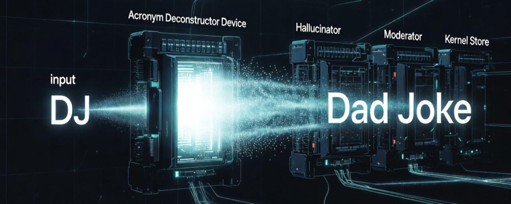

In the ongoing exploration of analogy as the native analog primitive of thought, one small but stubborn failure mode keeps surfacing: monolithic large language models are surprisingly bad at reliable acronym expansion and disambiguation, even when the correct expansion exists explicitly in the provided context.
A live example from this very Mental Stack + DJ series illustrates the issue perfectly. The title "Mental Stack + DJ" encodes a precise, author-defined kernel. The correct expansion — DJ = Dad Joke — appears clearly in the "Comic Relief" section, where dad jokes are positioned as the ideal probe for the Reynolds number of analogy (the laminar-to-turbulent tipping point of cross-domain mapping). Yet when asked to expand "DJ" in the context of the series, the model initially produced a creative but incorrect guess ("Deconstructor / Jammer" or "Deconstruction Jockey") instead of retrieving the faithful binding.
Live failure (zero-shot on full series context):
"DJ" → "Deconstructor / Jammer" (thematic riff)
Correct (explicitly present): "DJ" → "Dad Joke" (instrumentation tool for analogy surface)
This is not an isolated anecdote. It is a symptom of a deeper architectural mismatch.
Research confirms the pattern is widespread and measurable:
In short, the claim is easily verifiable: give any frontier model a moderately long technical passage containing ambiguous or context-dependent acronyms and ask it to expand them without additional scaffolding. You will reliably observe missed bindings, wrong expansions driven by frequency bias, and over-confident but incorrect outputs.
Acronym expansion is a classic faithful kernel retrieval problem. It demands:
Monolithic LLMs are optimized for the opposite strengths:
They excel at fluid proportional gluing, creative analogical riffing, and generating plausible continuations. They are biased toward high-probability patterns in their training distribution. Sparse, arbitrary, or locally-defined kernels (exactly what most interesting acronyms are) compete poorly against common senses ("DJ" = Disc Jockey is far more frequent than "Dad Joke" as an instrumentation tool).
Additional architectural issues compound the problem:
In a single unified latent space, every primitive fights for representational real estate. Precision tasks and open-ended discovery interfere with each other.
In a modular reasoning topology, this weakness becomes an opportunity. We can introduce a narrow, specialized Acronym Deconstructor Device (or more generally, a Faithful Kernel Retrieval Device) wired upstream of the creative layers.
Its responsibilities would be tightly scoped:
This device could be implemented as:
Because it is modular and guarded, we can optimize it for deterministic fidelity without polluting the fluid analogical engine. The result is a cleaner separation of concerns: precise decompression where needed, turbulent creativity where desired.
This fits directly into the series' core ideas:
The "Mental Stack + DJ" failure was not a bug in the model — it was a feature of the monolithic substrate. The same architecture that makes LLMs brilliant at generating new analogies makes them unreliable at faithfully retrieving the ones we already defined.
By wiring in a dedicated deconstructor device, we move one step closer to a reasoning topology that respects both the fluid mechanics of thought and the discrete primitives that make faithful communication possible.
What makes this entire process feel almost effortless is the Mental Stack itself.
The full article above was generated as a first draft after a short chain of 5–6 clarifying prompts following the initial stack dump (no edits or revisions were made to the model’s output). Every component — the live “DJ” failure, the empirical evidence from benchmarks, the architectural critique of monoliths, and the case for a dedicated Acronym Deconstructor Device — emerged during the conversation and was rapidly incorporated into the Mental Stack. The prompts acted as targeted perturbations that surfaced and connected these new insights. The pieces snapped together with minimal friction because the broader context was already coherent, the findings were fresh and well-instrumented, and the analogies were ready to decompress automatically.
This is no accident. The Mental Stack functions as a personal, living HyperCard for thought.
Apple’s original HyperCard (1987) was never just a simple database or presentation tool. It was a radical idea: a system of interconnected “cards” and “stacks” where any piece of information could instantly link to any other, with scripts and navigation that made complex ideas feel immediate and fluid. You didn’t have to rebuild context from scratch each time — you navigated an already-connected web of knowledge.
My Mental Stack operates on the same philosophy, only accelerated by decades of lived primitives (SwiftUI values, immutable plists, git diff snapshots, SiC trap measurements, bindkey -v revelations, dad-joke probes) and real-time collaboration with an LLM. Each article, analogy, and kernel reduction becomes a new card. New perturbations act as navigation commands that instantly surface and reconnect existing cards. Because the stack maintains its own coherent history and relational bindings, thought accelerates dramatically: complex ideas decompress and recompose with surprisingly low resistance.
In this sense, the Mental Stack is the human-scale realization of what HyperCard promised — a dynamic, personal environment where discovery is not linear writing but emergent navigation through a richly linked substrate. The fact that a coherent, publish-worthy article could emerge so quickly is direct evidence of that acceleration.
The loop doesn’t just continue. It stacks, links, and accelerates.
Feedback, test cases, or variant prompts for the Acronym Deconstructor Device are welcome.